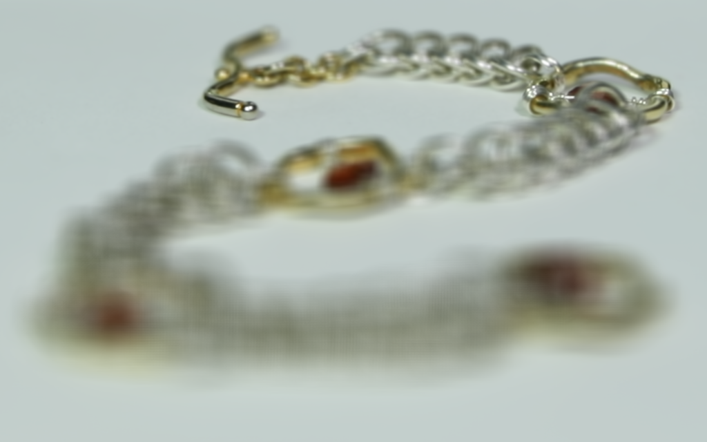

Project 6.1: Lightfield Camera Playground
- Here we play around the beautiful focus and real camera effects that can be achieved through an array of images.
- Operataions are as simple as shifting and averaging, but authentic depth-refocusing and aperture simulation can be achieved.
- Using the data from: The (New) Stanford Light Field Archive
Part 1: Depth Refocusing
- When moving the camera around, objects far away don't have as large pixel displacements as those closer to the camera.
- Naive averaging over all such images will intuitively give us a final result that's "in focus".
- As shown in the right image below:
Original Image

Naive Averaging Over All Images
- This observation leads to us thinking: maybe by shifting the image array appropriately,
- with each image nudging a slightly different value that is a function of depth,
- we can get a "refocused" image that is "in focus" at any given depth.
- We shift each image using the distance between their grid coordinates and the center image location (8, 8)
- Then depth is applied as a weight term that regulates the shift amount. We use simple nearest padding and bilinear interpolation.

Amethyst Refocused
Depth=[-2, 2], Step Size=0.2

Chessboard Refocused
Depth=[-1, 3.4], Step Size=0.2
- Additionally, if the task is run on CPU, it took over 288 minutes to just render one, so I use GPU to accelerate.
- Both task below is to perform a refocused operation over depth range [-3, 3] with step size 0.2 and the image size 1400x800.

Pure CPU: 218 minutes 42.3 s
GPU Accelerated: 2 minutes 22.9 s
Part 2: Aperture Adjustment
- The key part of this section is to generate images given a Diffusion model,
- Since the model is trained to denoise following a noise shedule
- It's hallucination nature would result in inperfect reconstruction of the image from pure noise, which is useful for us to generating new images that also lie on the image manifold.
- The key to make the generation work is to construct good sampling procedures that guide the model to denoise on the right image at the right timestep for the desired result.
Project 6.2: Gradient Domain Diffusion
- Here we explore the power of diffusion models mainly by implementing multiple ways of sampling, which is basically inference.
- The Diffusion Model we use is DeepFloyd IF with text embeddings from TF.
- Let's get started!
Part 1: Gradient Domain Fusion -- Toy Example
- Below are results of taking different
num_inference_stepsvalues for the same prompt. num_inference_stepson stage 1 won't affect the quality, but affects where the set of generated images will be on the image manifold.- On the other hand,
num_inference_stepson stage 2 DO affect the quality of the generated images. - It's also obvious that the larger the
num_inference_stepson stage 2, the more the details. Compare image 1 and 2, image 3 and 4 to get a feeling for this.

Stage 1: 20, Stage 2: 20
Part 2: Poisson Blending
- The key part of this section is to generate images given a Diffusion model,